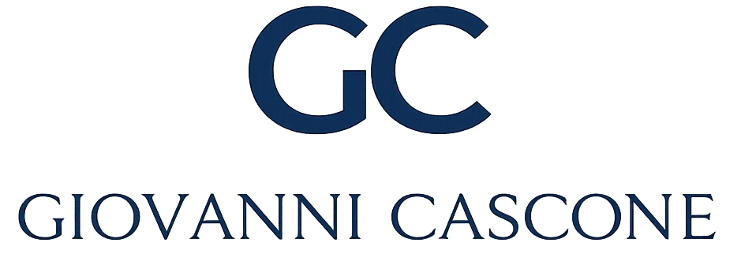

SJSUSan José State
01Master of Science
Master of Science
Computer Engineering
San Jose State University · California
2026 — active
COMPUTER ENGINEERING · MACHINE LEARNING
I’m Giovanni — an Italian computer engineer in California, turning research, data, and ambitious ideas into reliable software.
01 — ABOUT ME
I’m from Italy and currently pursuing a Master’s degree in Computer Engineering, specializing in Machine Learning, at San José State University. Alongside my studies, I work as a Machine Learning Engineer at Aerendir Mobile Inc., where I turn advanced research into practical technology with real-world impact.
Before graduate school, I earned my Bachelor’s degree in Computer Science magna cum laude at Southwest Baptist University. As a four-year soccer captain, I learned that the best systems — on the field or in production — are built through clarity, trust, and composure under pressure.
View my resume ↗02 — EDUCATION
San Jose State University · California
2026 — activeSouthwest Baptist University · Missouri
2022 — 2025Renato Caccioppoli · Scafati, Italy
2016 — 2021CERTIFICATION
Amazon Web Services Academy Graduate · 2025
03 — EXPERIENCE
Aerendir Mobile Inc.
Hacca Impianti
Jack Henry Project
Italy · Southwest Baptist University
04 — TOOLKIT
05 — SELECTED PROJECTS
ML / AI ENGINEERING · AERENDIR MOBILE INC. · 2026
Developed and evaluated machine-learning components for a privacy-preserving age-assurance system that uses subtle motion signals from everyday devices to determine whether a user meets an age threshold — without relying on identity documents or facial images.
ML / AI ENGINEERING · 2026
An end-to-end AI-video detection system that combines face-first inference with forensic signals, temporal analysis, and evidence-frame traceability.
ML / AI ENGINEERING · SJSU · 2026
A hybrid predictive-maintenance framework for Remaining Useful Life prediction in hybrid electric vehicles, trained on a unified 160K-sample dataset.
06 — CONTACT
I’m always open to thoughtful conversations about machine learning, software, and meaningful opportunities.
casconegb@gmail.com ↗